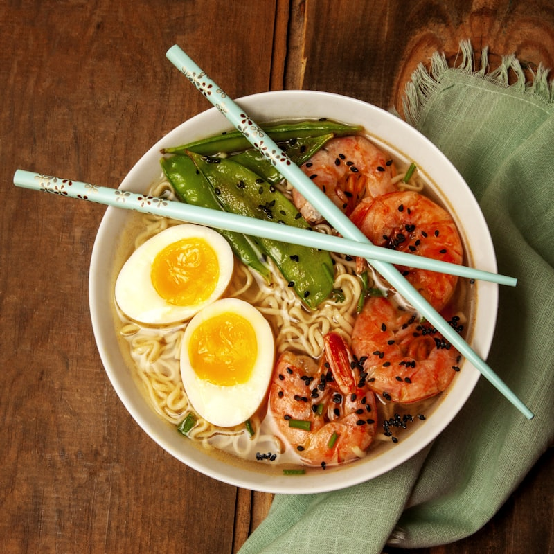

Handmade Daily with Sashimi-Grade Precision
Every roll, nigiri piece, and poke bowl is sculpted to order using imported Japanese ingredients, seasoned rice, and pristine cuts of fish.

The Charlotte & K.O. Roll
Our celebrated house creations: tempura shrimp and spicy tuna topped with seared salmon, ripe avocado, unagi eel glaze, spicy mayo, and golden tobiko caviar.

Build-Your-Own Poke Bowl
Layer seasoned sushi rice or crisp spring greens with cubed ahi tuna, Atlantic salmon, shelled edamame, seaweed salad, cucumber, avocado, and toasted sesame ponzu.

Tempura Udon & Beef Bulgogi
Thick Japanese sanuki udon noodles in a clear, slow-simmered dashi kombu broth with crisp tempura shrimp, scallions, and comforting sweet-soy marinated Korean bulgogi.

Impress Your Team with 38-Piece K.O. Deluxe Trays
Hosting an executive board meeting, client presentation, or office celebration in Uptown? Our 38-piece and 50-piece sushi party platters arrive exquisitely arranged with chef's choice nigiri, sashimi, and signature specialty rolls.
Includes individual soy dipping cups, real wasabi, pickled sushi ginger, and chopsticks. Delivered directly to your office floor or ready for fast pickup on South Tryon.
The K.O. Sushi Experience
Precision, speed, and uncompromising quality for the Queen City.
Daily Sourced Fresh Fish
Our sushi chefs receive pristine fresh Atlantic salmon, yellowfin tuna, hamachi yellowtail, and unagi daily, filleted with artisanal Japanese knives.
Express Uptown Lunch Rush
We understand corporate schedules. Pre-order by phone for seamless 10-minute counter pickup during the peak 11:30 AM to 1:30 PM lunch hour.
Healthy & Dietary Friendly
Enjoy gluten-conscious sashimi cuts, low-carb seaweed salad bases, brown rice options, and rich vegetarian maki loaded with avocado and crisp cucumber.